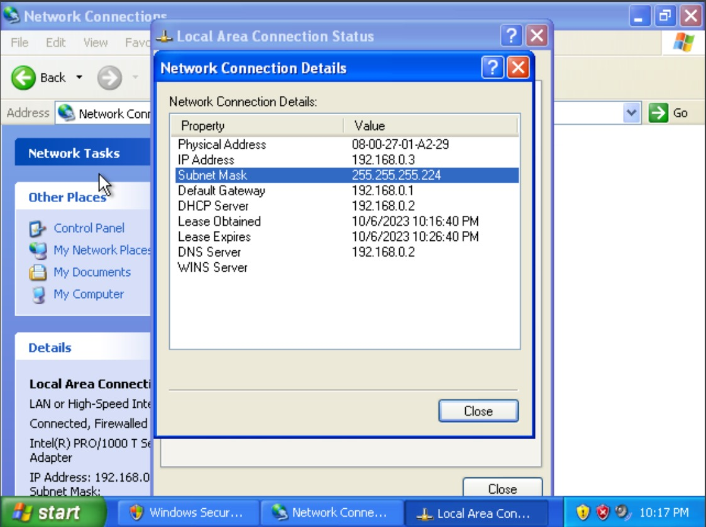

Chapther 1 : Creating a DHCP Server wih Debian
Creating A dhcp server
Pertama tama kita membutuhkan 2 OS satu untuk Server dan satu untuk Client
saya menggunakan
Debian7 Sebagai Server
WinXP Sebagai Client
Setelah kita berhasil menginstall keduanya kita perlu mengkonfigurasi Server kita
Masuklah ke root dari OS Debian kalian memasukan root pada kolom login dan masukan password yang telah kalian buat
1. Install Server DHCP kalian
Buka Terminal dan jalankan perintah untuk menginstall ISC DHCP Server:
sudo apt update
sudo apt install isc-dhcp-server
2. Konfigurasi ISC DHCP Server
Setelah instalasi selesai, Anda perlu mengkonfigurasi server DHCP. File konfigurasi utama berada di /etc/dhcp/dhcpd.conf. Anda dapat mengedit file ini dengan menggunakan editor teks seperti nano atau vim.
sudo nano /etc/dhcp/dhcpd.conf
Di dalam file konfigurasi, Anda harus menentukan subnet dan konfigurasi IP yang akan diberikan oleh server DHCP. Contoh konfigurasi sederhana:
subnet 192.168.1.0 netmask 255.255.255.0 {
range 192.168.1.100 192.168.1.200;
option routers 192.168.1.1;
option domain-name-servers 8.8.8.8, 8.8.4.4;
}
3. Konfigurasi ethernet default
Anda perlu menentukan ethernet default yang akan digunakan oleh server DHCP. Edit file konfigurasi antarmuka di /etc/default/isc-dhcp-server:
sudo nano /etc/default/isc-dhcp-server
4. Restart DHCP Server
Setelah mengonfigurasi server DHCP, restart layanan dengan perintah:
sudo service isc-dhcp-server restart
5. Aktfikan penerusan jika diperlukan
ika server DHCP berada di antara jaringan berbeda, pastikan Anda telah mengaktifkan penerusan paket di server Debian. Anda dapat mengaktifkannya dengan menjalankan perintah berikut:
sudo sysctl -w net.ipv4.ip_forward=1
Untuk membuat perubahan ini tetap setelah reboot, tambahkan baris berikut ke /etc/sysctl.conf:
net.ipv4.ip_forward=1
Terakhir, Anda dapat menguji server DHCP dengan menghubungkan perangkat ke jaringan dan memeriksa apakah mereka menerima alamat IP dari server DHCP.

Ini adalah langkah-langkah dasar untuk mengatur server DHCP di Debian. Pastikan untuk menyesuaikan konfigurasi sesuai dengan kebutuhan dan kebijakan jaringan Anda.